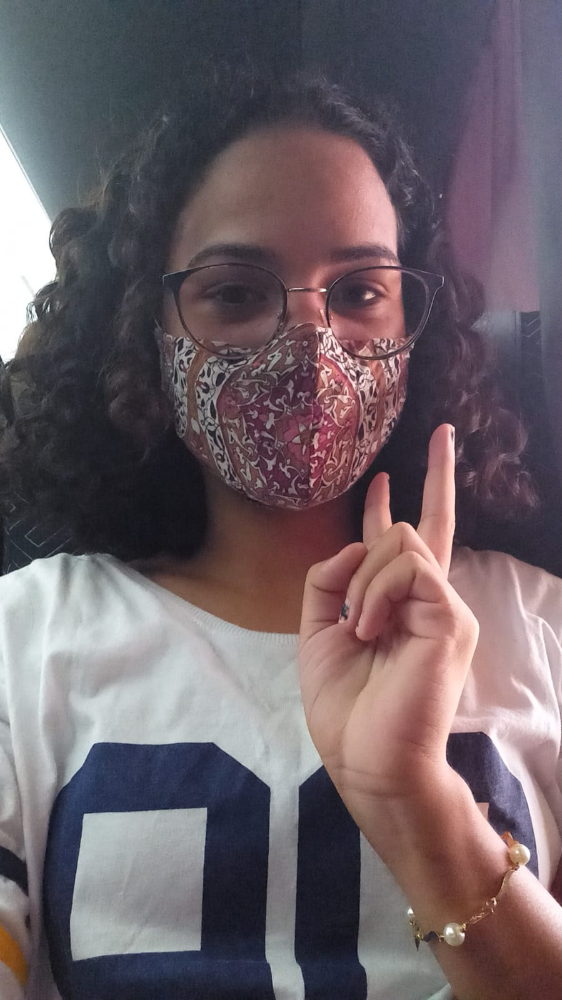

Hello everybody! Thank you for stopping by for a little bit! My name is Nayara, I'm 25 and I live in Brazil. Pleased to meet ya!
I love to play games, watch TV series and listen to music (AJR playing most of the time). I love to go to the movies as well, but at present, the lack of time and money keeps this poor padawan from doing so
I've been a member of the Church of Jesus Christ of Letter Day-Saints since I was a little kid, but only a couple of years ago I could get a real testimony for myself. I have served in the Hawaii Honolulu mission from 2018 to 2019 (shout out to all the buds that have served there as well). I loved my mission and hold dear the memories I have from that time.
I work at a bilingual school for primary grades students as an English teacher. I learn a lot with the little ones, of their diligence, forgiveness, how they are not afraid to make mistakes, and the help they offer right away as they see a complicated concept, to teach each other. They are definitely the best part of the day.
With this course WDD 130 I hope to learn to better build sites, build ones that have quality, and in the future work with Web Development.
That was a little bit about me!